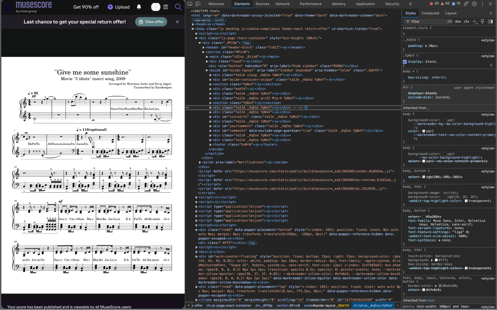
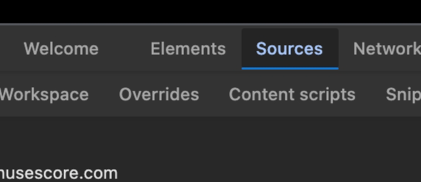
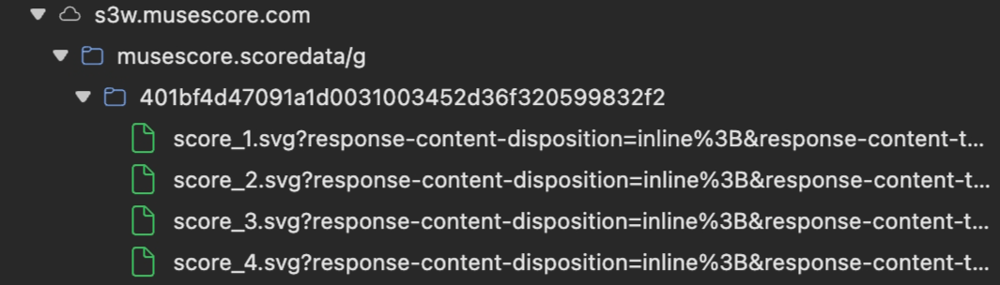
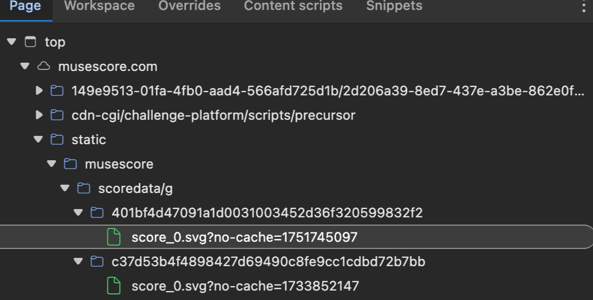
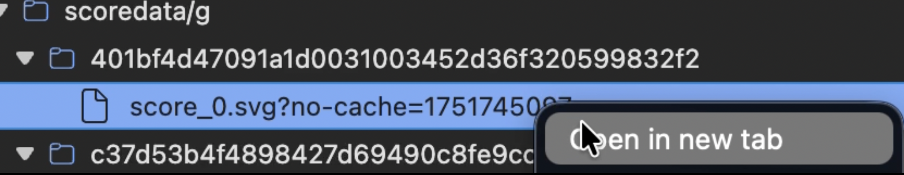
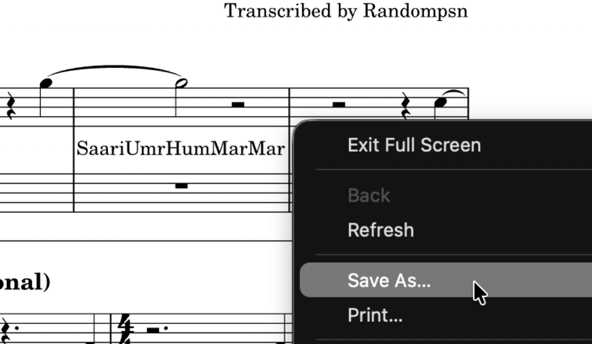

Guide to Free SVG Download In Musescore
This method allows you to download svg (scaleable vector graph) pictures of scores in musescore via developer tools. Scores obtained with this method have higher qualities than screenshotting and will be equivalent to the pdf you download from paying musescore after a combining. I recommend svgtopdf.com for this purpose.
1.Open your browser's developer tools. This can be done with the sidebar, right-clicking then choosing inspect, or control+shift+i for windows & option+cmd+i for mac.
You should find yourself in the developer mode now.

2. Websites on your browser ultimately have to send the HTML file which controls what is in the website. In HTML, images are shown through telling the browser where the image source is, and because this piece of information has to be known by the browser, we in developer mode can find it too.
To locate the images, we need to find them within the source page on the top bar.

3. Locate "s3w.musescore.com" in Sources. Open the folder and you'll get all images except for the front cover. (If some of the pages after the cover aren't found, you need to scroll in musescore to load them in the dev tools page.)

4. We'll download them altogether with the missing cover page. Open "static" in sources, then "musescore", then "scoredata/g". Open the folders and you'll find the front page.

5. Afterwards, right-click the scores and select "open in new "tab". You can then open the new tab and right-click the scores yet again to download them, this time without being bothered by musescore's pay wall anymore.

